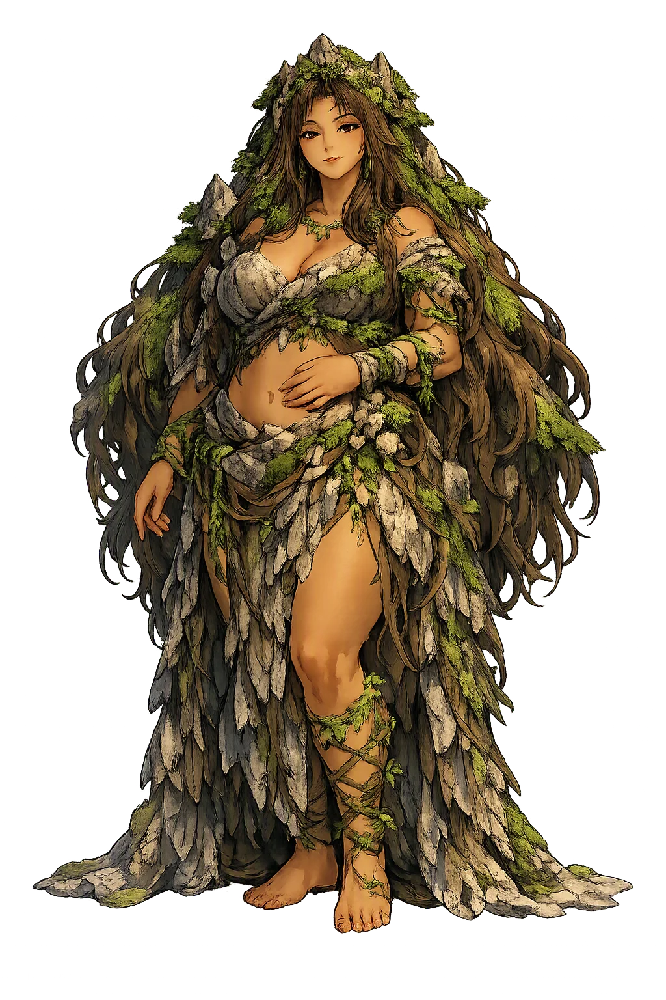
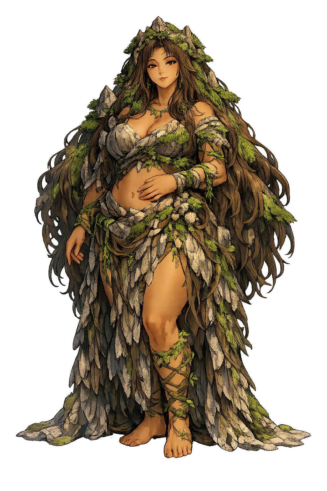

Stories of Mago
Mago's mythology has no single canonical text. It survives in the Jeju changsega (creation song) recorded from shamans in the twentieth century, in mainland folktales of the giant grandmother, and — for her Chinese namesake Magu, the “Hemp Maiden” — in medieval Daoist literature. The strands meet in one figure: an ancient female power whose body is the land and whose patience outlasts ages.
In the Jeju Island creation epic known as the changsega, “Song of Creation,” preserved orally by shamans and recorded only in the twentieth century, the work of making the world falls to a grandmother. Mago Halmi — “Grandmother Mago” — takes up the labour of creation with her own body: she urinates, and her water cuts the courses of rivers; she stamps and pushes, and the earth rises into ridges and peaks; her sighs turn to wind. The song's most startling gesture is its scale: this creator is not a distant sky-father but a working woman whose bodily functions are the very tools of cosmogony. Later versions collected on the Korean mainland add the motif of her vast skirt spreading over the mountains, hemming the valleys into place. Because the text survives only in modern field recordings published in Hyun Yong-jun's collections of Korean myths, scholars treat it as an oral cosmogony of great antiquity whose written form is late. The myth's meaning is plain: the Korean landscape is a grandmother's handiwork, and the land itself remembers her.
In a folktale told across the Korean mainland, Mago Halmi's skirt is the instrument of geography itself. The grandmother spreads the cloth over a mountain range and lifts it; where the hem settles, valleys open, and where the fabric bunches, ridges rise, and she hems the whole country into shape the way a woman hems a garment. Twentieth-century folklorists recorded the motif in many regional variants, and scholars have long noted its inner logic: textile work — women's work — becomes the model of cosmogonic work. There is no single canonical version and no ancient text to cite; the story is simply what oral tradition kept, which is precisely its authority. In one family of tellings the grandmother is so large that her body alone is the terrain: her urine becomes rivers, her sighs become wind, her shoulders become the ranges. The myth's meaning is that shaping the earth is domestic labour scaled to the sky — the mountains pressed into place by a woman's hands, and the pattern cut like a skirt.
The Chinese Magu (麻姑), the “Hemp Maiden,” enters literature through the Daoist biography of the immortal Wang Yuan, preserved in the Shenxian zhuan attributed to Ge Hong (fourth century) and quoted in the tenth-century compendium Taiping Guangli. Summoned to the house of the official Cai Jing, Magu appears as a girl of eighteen or nineteen in shimmering robes, with fingernails long and curved like bird claws. When Cai Jing privately wishes his back could be scratched by such claws, Wang Yuan reads his thought and has Magu do exactly that. Her greeting to Wang Yuan contains the line that made her immortal in the language: since they last met, she says, the Eastern Sea has three times turned into mulberry orchards — cang hai sang tian, “blue seas become mulberry fields,” the Chinese idiom for epochal change. The anecdote reframes the goddess as the witness of deep time: young forever, she measures the world in geological ages rather than reigns or generations.
In Korean shamanic ritual (gut), the primordial grandmother is not a figure of the remote past but a present power. Shamans of Jeju and the mainland invoke Mago Halmi at the opening of major ceremonies, addressing her as the first grandmother whose permission orders the rite and whose blessing steadies the household; in the Jeju tradition the sequence of invocations descends from the highest cosmic deities toward the spirits of the local landscape, and the creation grandmothers stand near the head of that ladder. Twentieth-century scholarship — Lee Jung Young's study of Korean shamanistic ritual, Hong Tae-han's history of Korean shamanism — documented these invocations as living practice rather than fossil. Contemporary interpreters such as Helen Hye-Sook Hwang have gone further, reading the Mago tradition as the remnant of an ancient goddess-centred cosmology and building a modern “Magoism” upon it, a reading influential in feminist and ecological spirituality though debated among historians of religion. The ritual myth's meaning endures: creation was a grandmother's act, and it is renewed whenever her name is properly called.
primordial creator and earth-shaping grandmother
Mago is the great goddess of Korean shamanic cosmology, honoured as Mago Halmi, the grandmother who creates and shapes the world. In the Jeju creation song the landscape is her own body: her water cuts rivers, her movements raise mountains, her skirt hems the valleys into place. To Korean folk religion she is the primordial mother whose permission opens every great ritual.
She stands at the head of the Jeju gut invocations, the first grandmother addressed when order must be restored.
In the changsega, the Jeju creation song, she divides sky from earth and lays out the first mountains with her own hands.
Mountains, rivers, and islands are traced to her body: her urine becomes rivers, her skirt becomes ranges.
She sustains life, heals disorder, and links the living household to the deep time of cosmic origins.
From the original script to the living URL
마고 (麻姑)
The name in its original Korean form. Mago (마고 (麻姑)) is attested in the source tradition — “Great goddess”. Its original diacritics and script distinctions carry the full phonetic and orthographic weight of the source tradition.
mago
The plain mago form is identical to the Unicode restoration. Because this name is already written in Latin letters, no diacritics, stress, or script information were lost — only capitalization differs.
Mago
The Unicode restoration does not need to recover lost marks for Mago. Its value is canonical spelling and consistent cataloguing, not the reconstruction of erased orthography. The domain is readable as-is to both DNS and humanity.
Mago.com
This restoration is written entirely in ASCII letters — no Punycode encoding stands between Mago and the DNS. The domain reads identically to machines and to human eyes.
Owned, ideal, and ASCII forms of Mago
Mago
Restores 마고 (麻姑). The full Unicode restoration. mago.com is not in the PuniCodex collection — it is watched for release; if it drops, this temple upgrades to an owned flagship.
How Mago was spoken
How Mago travels from ancient script to the modern URL
Mago asks a different question from most creator gods: not “who made the world?” but “whose world is it?” Her answer is grandmotherly and uncompromising — the land is a relative, not a resource, and the body's ordinary labours are the true instruments of cosmogony. That matters for a name. Mago written in Hangul (마고) or Hanja (麻姑) carries script and history that ASCII cannot hold; the capitalised romanisation is a scholarly courtesy, a reminder that behind the domain name stands a goddess whom many still invoke as grandmother. To restore the name is to insist that Korean cosmogony belongs on the same shelf as Hesiod and the Eddas.
Enter Extended Lore